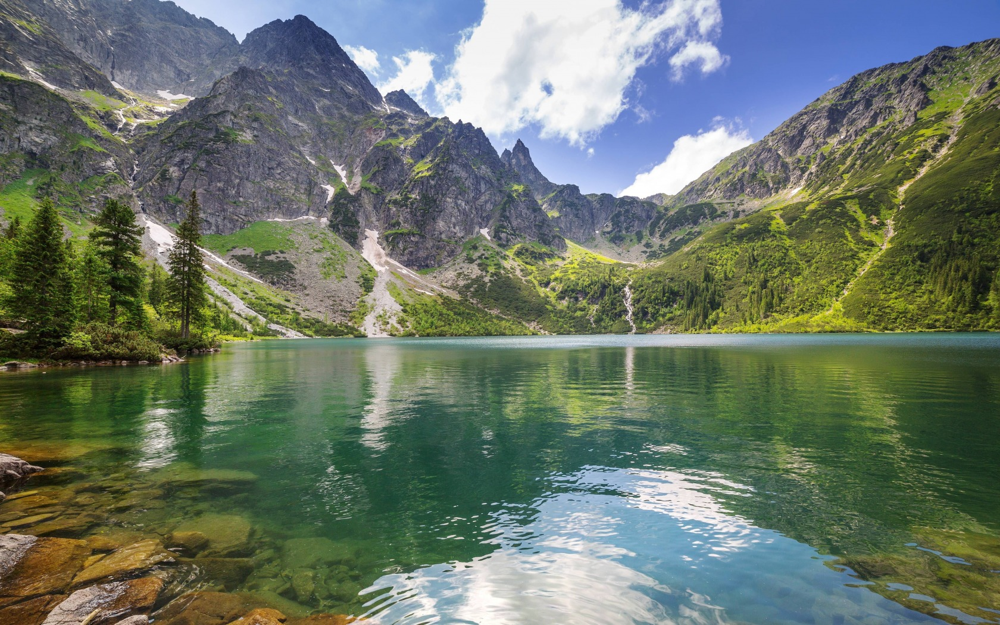

/img/Aminus.png)
/img/Aplus.png)
/img/karta1.png)
Кроноцкий государственный природный биосферный заповедник — один из старейших заповедников России. Как государственный образован в 1934 году на месте существовавшего с 1882 года Соболиного заповедника. Кроноцкий государственный заповедник расположен в восточной части полуострова Камчатка и занимает площадь 1 147 619,37 гектаров, включая 135 000 гектаров (1350 кв. км) примыкающей трехмильной акватории Тихого океана. Заповедник включает в себя территорию Кроноцкого полуострова. Здесь расположены 8 действующих вулканов, высочайшим из которых является Кроноцкая Сопка (3528 м), термальные озера, знаменитая Долина гейзеров, водопады.
Заповедник состоит из двух кластерных участков. Основной кластерный участок — вытянутая с юга на север вдоль берега Тихого океана территория длиной 160 километров (по береговой линии — 243 километра) и шириной 60 километров. Находится в Елизовском муниципальном районе Камчатского края. С юга кластерный участок ограничен Семячикским лиманом, с севера — устьем реки Малая Чажма. В заповедную зону, помимо суши, входит прилегающая к ней 3-мильная акватория Тихого океана, включенная в состав заповедника в 1982 году. Второй кластерный участок — Лазовский, отделенный от основного узкой лентой горной тундры и предгорьями. Он представляет собой территорию хвойной тайги в бассейне реки Камчатки в Мильковском муниципальном районе Камчатского края. Эта территория присоединена к Кроноцкому заповеднику в 1992 году по распоряжению Правительства Российской Федерации от 03.06.1992 «О включении в состав земель Кроноцкого государственного биосферного заповедника земельного участка Атласовского мехлесхоза Лазовского лесничества площадью 43 134 га». Главные богатства Лазовского участка — нетронутые еловые леса (Щапинские ельники), лиственничный лес, группа термальных источников. На Лазовском участке обитает лось, для которого этот заповедный участок является местом, куда животные могут уйти от преследования с расположенных рядом охотничьих угодий.
Также в ведении Кроноцкого заповедника находится Государственный природный заказник федерального значения «Южно-Камчатский», занимающий всю южную часть полуострова Камчатка. Кроноцкий заповедник — один из трех камчатских заповедников федерального значения. В 1985 году он получил статус биосферного и был включен в международную сеть биосферных резерватов, а в 1996 году особо охраняемые территории Камчатки, в числе которых — заповедник «Кроноцкий», вошли под общим названием «Вулканы Камчатки» в Список всемирного природного наследия. Оба эти события — признание на мировом уровне богатства и значимости Кроноцкого природного биосферного заповедника в сохранении ландшафтного и биологического разнообразия планеты, ключевых природных экосистем; в восстановлении популяций редких и исчезающих видов животных и растений; в изучении и познании природных явлений, связанных с вулканической активностью. И действительно, многие природные объекты заповедной территории — уникальны. Это Долина гейзеров, кальдера вулкана Узон, Долина смерти, роща пихты грациозной (изящной), Кроноцкое озеро, лиственничный лес в бассейне Кроноцкого озера, Щапинские ельники, Чажминские и Тюшевские горячие источники, Семячикский лиман, Семячикские горячие ключи, ледники Кроноцкого полуострова.
-

Фотоальбом
ДОЛИНА ГЕЙЗЕРОВ И КАЛЬДЕРА ВУЛКАНА УЗОН — две главные термальные площадки Кроноцкого заповедника. Благодаря непрерывным проявлениям вулканической активности, особому микроклимату и особой экосистеме, Узон-Гейзерный район известен ученым всего мира и является для них исследовательской и экспериментальной площадкой. ДОЛИНА ГЕЙЗЕРОВ — достаточно глубокий (400 метров) и широкий (4 километра) каньон длиной 8 километров, по которому протекает горячая река Гейзерная, а по бортам каньона фонтанируют более 40 гейзеров, пульсируют или изливаются на поверхность горячие минеральные источники, текут теплые ручейки и водопады, кипят грязевые котлы. Гейзерные площадки, сложенные гейзеритами — серыми, белыми, голубоватыми, перламутровыми отложениями минеральных солей; покрывало из сине-зеленых, бурых, оранжевых, белых водорослей на мелководьях; разноцветные глины и яркая зелень высокотравья на окружающих склонах — всё это дополняет сказочную картину парящей, бурлящей, шипящей, свистящей долины. Среди вулканов и сопок Долина гейзеров выглядит оазисом благодаря тому, что здесь, в окружении многочисленных термопроявлений, образовался свой микроклимат. Здесь рано сходит снег, рано пробуждаются растения, что соответственно привлекает животных, обитающих на близлежащей территории. В отличие от других гейзерных участков, имеющихся на планете, камчатская Долина гейзеров компактна, насыщена выходами подземных термальных вод и представляет собой уникальное зрелище. В 2008 году Долина гейзеров вошла в Список семи чудес России. Долину гейзеров открыли в апреле 1941 года сотрудники Кроноцкого заповедника — геолог Татьяна Ивановна Устинова (1913–2009) и наблюдатель Анисифор Павлович Крупенин.
/img/ecology.png)
/img/link.png)